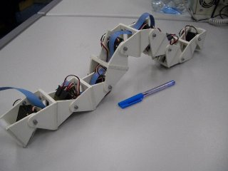
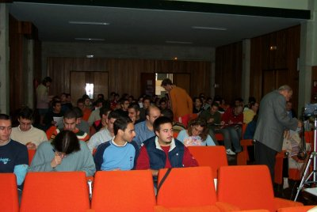
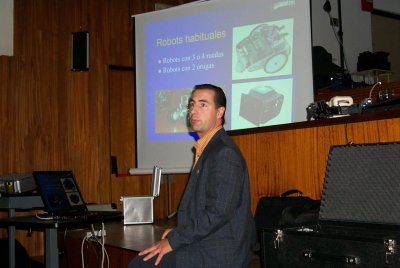
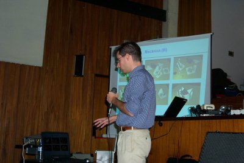
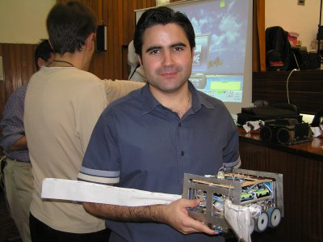
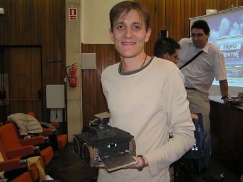
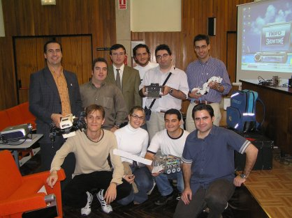

|
 |
|
|
“Diseño de Robots Ápodos: Cube Revolutions”.UCA. Nov-2004 |
|
 |
|
Título: “Diseño de Robots Ápodos: Cube Revolutions”
Evento: Semana de la Ciencia y Tecnología
Lugar: Escuela Superior de Ingeniería de Cádiz. Universidad de Cádiz (UCA)
Fecha: 4 de Noviembre de 2004
Ponente: Juan González Gómez (Universidad Autónoma de Madrid, UAM)
En el campo de la robótica móvil existen robots que no utilizan ni ruedas ni orugas ni patas para desplazarse. Dentro de este grupo se encuentran los robots ápodos. Por otro lado, en 1994 Mark Yim propuso un nuevo enfoque en la construcción de robots móviles: la robótica modular reconfigurable. El robot Cube Revolutions, descrito en esta presentación, es un ápodo desarrollado bajo la perspectiva de la robótica modular reconfigurable. Está compuesto por la unión en cadena de 8 módulos iguales (Módulos Y1). Se desplaza en línea recta, mediante ondas que recorren su cuerpo desde la cola hasta la cabeza. El robot calcula las posiciones de las articulaciones a partir de los parámetros de la onda: forma, amplitud y longitud de onda. Para la electrónica se han usado diferentes enfoques. En esta presentación se muestra la más sencilla: control mediante un microcontrolador de 8 bits conectado a un PC por medio de un cable serie. Cube Revolutions es un robot para la investigación, que está en desarrollo. Se muestran los algoritmos empleados para la locomoción y los que se van a emplear en un futuro: algoritmos genéticos que permitan determinar las secuencias óptimas de movimiento.
|
Descarga de la presentación |
|
uca-cube-rev.sxi (5,3MB) |
Presentación para OpenOffice 1.1.2 |
|
uca-cube-rev.pdf (1,5MB) |
Presentación en PDF |
Se condecen permisos para usar, modificar y/o distribuir esta presentación, siempre que se mantenga esta nota.
Robot Cube Revolutions
Información sobre los módulos Y1
Artículo presentado en el Clawar 2004, sobre Cube Revolutions: “Locomotion of a Modular Worm-like Robot using a FPGA-based embeded MicroBlaze Soft-processor”
Artículo presentado en el JCRA 2004, sobre Cube Revolutions: “Locomoción de un Robot Ápodo Modular con el Procesador MicroBlaze”
Cube Reloaded, versión anterior de Cube Revolutions.
“Diseño de Robots ápodos”, trabajo de iniciación a la investigación. Junio 2003.
Cube 2.0, versión inicial, anterior a Cube Reloaded
El Miércoles 3 de Noviembre Alejandro Alonso y yo (Juan González) quedamos en la estación de Atocha para irnos a Cádiz. En el tren nos encontramos a Javier Herrero y David Yáñez, autores de los robots luchadores de sumo Panzer y La Bestia, respectivamente. El viaje fue muy agradable. Nos pasamos las 4 horas y media charlando sobre robótica en el bar :-)
Al llegar a Cádiz nos estaban esperando en la estación Jose Pichardo, Lourdes, Paco y Dani. Nos llevaron al hotel parador atlántico. Sin duda, un lugar fantástico, con vistas al mar.
De camino a la Universidad nos hicimos algunas fotos (izquierda: Paco, Javi, Alejandro, Yo, David, Dani, Jesús, Jose y Lourdes). Después de comer Lourdes y Jose nos enseñaron Cádiz. En la foto de la derecha estamos frente al teatro Falla.
|
|
|
El Jueves 4 comenzaban las Jornadas. La primera presentación la hizo Alejandro Alonso, bajo el título: “Esos Curiosos Robots”. (Melanie, Ganador prueba libre Hispabot)
|
 |
 |
A continuación vino la conferencia sobre “Cube Revolutions”. En la foto de la derecha estamos Jose, Cube Revolutions y Yo.
|
 |
|
Luego les tocó el turno a Javi, que presentó a Panzer, ganador del concurso de sumo Hispabot 2004, y a David, con su robot La Bestia, subcampeón en la misma categoría.
|
 |
 |
...Y por último la foto de grupo. Empezando por arriba a la izquierda: Alejandro (con Melanie III), Paco, Arturo, Jesus, Dani (con la Bestia), y Juan (con Cube Revolutions). En la fila de Abajo, de izquierda a derecha: David, Lourdes, Jose (con Panzer) y Javier.

Al profesor Arturo Morgado, Subdirector de Investigación en la Escuela Superior de Ingeniería de Cádiz, por invitarme a participar en la Semana de la ciencia. Muchísimas gracias.
Al grupo de Robótica UCABOT: Jose, Dani, Paco, Jesus y resto de integrantes. Muchas gracias por toda la ayuda prestada.
Especialmente, a Jose Pichardo, autor de Siko, y a su novia Lourdes. Muchas gracias por dedicarnos todo vuestro tiempo, enseñarnos Cádiz y llevarnos a tomar ese pescaito tan rico :-).
1/Enero/2005: Añadido enlace a Cube Revolutions
11/Nov/2004: Publicada información en esta web